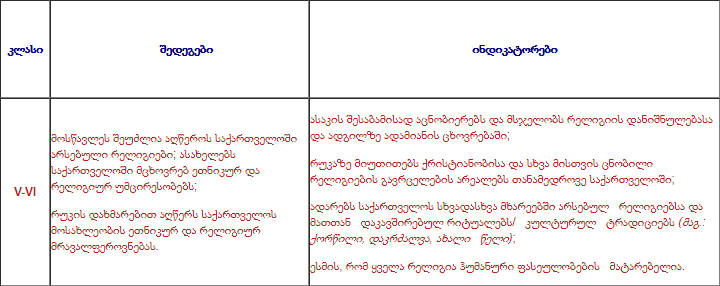
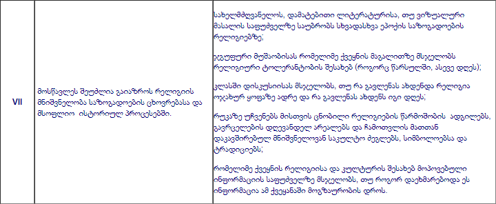
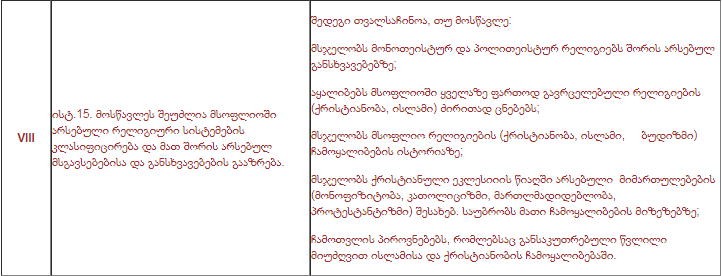
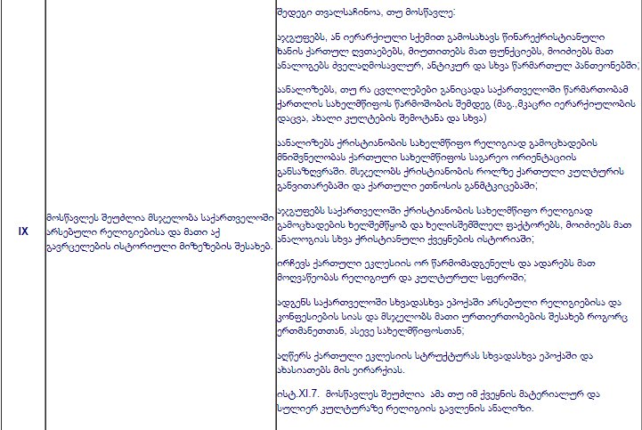
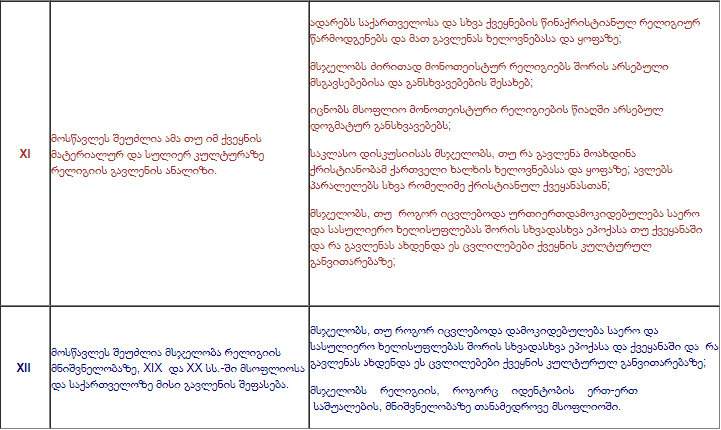

რელიგიის სწავლება საჯარო სკოლებში
ავტორი: შალვა ტაბატაძე
რელიგიის სწავლება საჯარო სკოლებში მნიშვნელოვანი და, ამასთანავე, საკამათო საკითხია. საქართველოში ბოლო დროს გააქტიურდა მსჯელობა რელიგიის ისტორიის სწავლების შესახებ, რაც გამოიწვია მინისტრის განცხადებამ, რომ საშუალო განათლების საფეხურზე რელიგიის ისტორია აუცილებლად უნდა ისწავლებოდეს, თუმცა ის, იმავდროულად, არჩევითი უნდა იყოს.
წინამდებარე მოხსენების ფარგლებში წარმოგიდგენთ რამდენიმე მოსაზრებას რელიგიის სწავლების შესახებ საქართველოს საჯარო სკოლებში. მოხსენების პირველ ნაწილში ვისაუბრებ, თუ რამდენად არის მნიშვნელოვანი ან უმნიშვნელო რელიგიის სწავლება საჯარო სკოლებში, მეორე ნაწილში კი საუბარი გვექნება იმაზე, თუ რა კონტექსტია დღესდღეობით საქართველოში ამ თვალსაზრისით. მესამე ნაწილში გავაანალიზებ განათლების პოლიტიკის ჭრილში რელიგიის ისტორიის არჩევით საგნად შემოტანის საკითხს.
რელიგიის სწავლება საჯარო სკოლებში
განათლების სპეციალისტთა შორის არსებობს კონსენსუსი რელიგიის სწავლების აუცილებლობის შესახებ საჯარო სკოლებში და ის ხარისხიანი განათლების განუყოფელ ნაწილად აღიქმება (ეუთო, 2002). რელიგიის სწავლება საჯარო სკოლებში მნიშვნელოვანია შემდეგი საგანმანათლებლო მიზეზებიდან გამომდინარე: (1) მრავალფეროვან საზოგადოებაში სხვადასხვა ჯგუფმა უნდა იცოდეს ერთმანეთის რელიგიის, რწმენის შესახებ, რათა ტოლერანტული დამოკიდებულება ჰქონდეთ; ანუ ამოსავალია მშვიდობიანი თანაცხოვრება და ტოლერანტობა. როგორც ლესტერი და რობერტსი აღნიშნავენ, სხვისი რწმენის პატივისცემა შეუძლებელია, თუ არ გაგაჩნია საბაზისო ცოდნა რელიგიური ტრადიციების შესახებ, სწორედ განათლებაა ის საუკეთესო პრაქტიკა, რომლითაც მიიღწევა ურთიერთგაგება და პატივისცემა, ხოლო საჯარო სკოლები _ ლოგიკური ადგილი ამ ტიპის განათლების მისაღებად, რადგან რელიგიური უფლებებისა და თავისუფლებების მიმართ დამოკიდებულება სწორედაც ადრეულ ასაკში ყალიბდება (2006). ამავე მოსაზრებებს იზიარებს ეუთოს ტოლედოს რეკომენდაციები (2007), ევროპის საბჭოს საპარლამენტო ასამბლეის 2005 წლის 4 ოქტომბრის ½1720 რეკომენდაცია რელიგიისა და განათლების შესახებ და ა.შ.; (ბ) ანალიტიკური და ინტერპრეტაციული უნარების განსავითარებლად; პატივისცემა, ინკლუზიურობა, აკადემიური პატიოსნება და მიუკერძოებლობა; (გ) სხვადასხვა ისტორიული, პოლიტიკური, სახელოვნებო, სოციალური, ფილოსოფიური, ლიტერატურული მიმართულების გააზრება რელიგიის ცოდნის გარეშე შეუძლებელია; (დ) მოსწავლეთა მორალური განვითარებისა და საკუთარი რწმენის გააზრებული დაფასებისთვის.
საქართველოს კონტექსტი რელიგიის ისტორიის სწავლების შესახებ
განვიხილეთ რა პირველი მნიშვნელოვანი საკითხი, თუ რამდენად აუცილებელია რელიგიის შესახებ სწავლება საჯარო სკოლებში, ალბათ, უპრიანია, მიმოვიხილოთ ის ვითარება, რაც დღესდღეობით არსებობს რელიგიის სწავლების თვალსაზრისით ჩვენს ქვეყანაში. საქართველოში არსებობს რელიგიის სწავლების გარკვეული გამოცდილება, რომლის გათვალისწინებაც მნიშვნელოვანია.
1988 წლიდან საქართველოში ჰუმანიტარულ სასწავლებლებში შემოვიდა საგანი „ქრისტიანული რელიგიის ისტორია“, რომელიც ხელოვნებასა და ლიტერატურაზე რელიგიის გავლენასაც სწავლობდა. მალე ეს საგანი დამკვიდრდა ზოგადსაგანმანათლებლო დაწესებულებებშიც (საგანი არჩევითი იყო და მის შესწავლას კვირაში ერთი აკადემიური საათი ეთმობოდა (ჯაჯანიძე, 2015; პაპუაშვილი, 2004). იცვლებოდა ამ საგნის სწავლებისადმი მიდგომაც. ამ პროცესში აქტიურად მონაწილეობდა საქართველოს საპატრიარქოც, რომელსაც ეს უფლებამოსილება მინიჭებული ჰქონდა იმ დროს არსებული კანონმდებლობით. კერძოდ, „განათლების შესახებ“ კანონის 18.2 მუხლში (1997 წლის 22 ივნისის კანონი) აღნიშნული იყო: „საქართველოს განათლებისა და მეცნიერების სამინისტრომ უნდა ითანამშრომლოს საქართველოს საპატრიარქოსთან სასკოლო გეგმის შემუშავებისას“ (პაპუაშვილი, 2008).
2005 წლიდან საქართველოში დაიწყო ეროვნული სასწავლო გეგმების რეფორმირება და ახალი ეროვნული სასწავლო გეგმის დანერგვა. ახალი მიდგომის შესაბამისად, საჯარო სკოლებში სავალდებულო საგნად შემოვიდა საგანი „სამოქალაქო განათლება“, რომელიც საზოგადოებრივი მეცნიერებების საგანთა ჯგუფის ნაწილად იქცა. 2011 წელს შემუშავდა მეორე თაობის ეროვნული სასწავლო გეგმა 2011-2016 წლებისთვის, რომელიც დღესაც მოქმედებს. ამ სასწავლო გეგმის მიხედვით, რელიგიისა და რელიგიის ისტორიის საკითხები ისწავლება ესთეტიკური საგნებისა და საზოგადოებრივი მეცნიერებების საგნობრივ ჯგუფებში ინტეგრირებულად. კერძოდ, საგან „ხელოვნების“ სასწავლო გეგმაში განსაზღვრულია, რომ „მოსწავლეს შეუძლია დააკავშიროს სახვითი და გამოყენებითი ხელოვნების სხვადასხვა დარგის ნიმუშები ისტორიულ, რელიგიურ და სოციალურ კონტექსტთან“. აღნიშნული შედეგი ასახულია ხელოვნების საგნის ყველა კლასის სასწავლო გეგმაში, ხოლო საზოგადოებრივი მეცნიერებების სასწავლო გეგმა კლასების მიხედვით უფრო დეტალურად გვთავაზობს იმ შედეგებისა და ინდიკატორების ჩამონათვალს, რომლებიც რელიგიის სწავლებას შეეხება. ცხრილი დეტალურად წარმოგიდგენთ რელიგიის საკითხების ასახვას საზოგადოებრივი მეცნიერებების ეროვნულ სასწავლო გეგმაში კლასების მიხედვით:
ცხრილი: რელიგიის სწავლება ისტორიის ეროვნულ სასწავლო გეგმაში

წარმოდგენილი ცხრილით თვალსაჩინოა, რომ ეროვნული სასწავლო გეგმა ითვალისწინებს რელიგიის ისტორიასთან დაკავშირებული საკითხების საკმაოდ საფუძვლიან შესწავლას, თუმცა სწავლების მიდგომად არჩეულია ინტეგრირებული სწავლება.
რელიგიის ისტორიის არჩევით საგნად დანერგვის ინიციატივის ანალიზი განათლების პოლიტიკის ჭრილში
მნიშვნელოვანია, აღნიშნული ინიციატივა განვიხილოთ საგანმანათლებლო პოლიტიკის ჭრილში და სწორედ ამ ანალიზის შედეგად ვიმსჯელოთ ამ გადაწყვეტილების სიკეთეებსა და მოსალოდნელ შედეგებზე. შევეცდები, ეს საკითხი განათლების პოლიტიკის ჭრილში შემდეგი მიმართულებით განვიხილო: (ა) საგნის არჩევითობასთან დაკავშირებული პრობლემა; (ბ) ინტეგრირებული თუ ცალკე საგანი, ინტეგრირებული მიდგომების უპირატესობები; (გ) მასწავლებელთა კვალიფიკაცია და მასთან დაკავშირებული პრობლემები (დ) ფინანსური დანახარჯები და მისი ეფექტურობა.
(ა) არჩევითობის პრობლემები
არჩევითობის სპეციფიკას უკავშირდება სხვა პრობლემებიც: (1) მაშინ, როცა რელიგიის ისტორია საკმაოდ ფართოდ არის წარმოდგენილი ისტორიის სწავლებისას სავალდებულო სახით, არჩევით საგანში კიდევ უფრო ღრმად იქნება წარმოდგენილი? ასეთ შემთხვევაში, რამდენად საჭიროა ზოგადი განათლების საფეხურზე რელიგიათა ისტორიის ისეთი სიღრმისეული შესწავლა? თუ რელიგიის ისტორიის არჩევით საგანში, უბრალოდ, ცალკე საგნად იქნება წარმოდგენილი ის, რაც ამჟამად ისტორიასთან ინტეგრირებულად არის წარმოდგენილი, შეუწყობს კი ეს ხელს რელიგიის ისტორიის უკეთ სწავლებას? ანუ, ჰიპოთეტურად რომ ვთქვათ, ის, რაც ახლა სავალდებულოდ ისწავლება, შესაძლოა, შემდგომ საერთოდ აღარ ისწავლოს მოსწავლემ.
საგნების არჩევითობა სხვა მიმართულებითაც აჩენს კითხვის ნიშნებს. თუ საგანი არჩევითია, ამ საგნის ფარგლებში არ იქმნება სახელმძღვანელოები, იქმნება მხოლოდ სავალდებულო საგნებში, შესაბამისად, ეს საგანი გრიფირებული სახელმძღვანელოების გარეშე უნდა ისწავლებოდეს; ანდა, ალტერნატივაა, სახელმწიფომ უზრუნველყოს დამატებითი რესურსები სახელმძღვანელოს შესაქმნელად. ასეთ შემთხვევაში კი ორი დამატებითი კითხვა დაისმება: რამდენად მიზანშეწონილია, შეზღუდული ფინანსური რესურსების პირობებში, დამატებითი ხარჯების გაღება ამ მიმართულებით? და მეორე: რამდენად იქნება სახელმწიფოს მიერ შეკვეთილი სახელმძღვანელო ნეიტრალური? ასეთ შემთხვევაში სახელმძღვანელოებს, როგორც წესი, უფრო პოლიტიკური და პროპაგანდისტული დატვირთვა აქვთ, ვიდრე სამეცნიერო ან საგანმანათლებლო, რადგან, როგორც ბროკმანი აღნიშნავს, „რელიგიის სწავლების შესახებ სასწავლო გეგმას ხშირად ადგენენ არა მეცნიერები, არამედ სამთავრობო სტრუქტურები. სამთავრობო სტრუქტურების ხედვა კი, შესაძლოა, არ იყოს თანხვედრაში მეცნიერთა შეხედულებებთან... სამთავრობო სტრუქტურები ხომ, პირდაპირ თუ ირიბად, ამომრჩევლების განწყობებზე არიან პასუხისმგებელნი“ (2016; გვ. 2-3).
არჩევითობას უკავშირდება მასწავლებელთა მომზადებისა და პროფესიული განვითარების პრობლემატიკაც. არჩევითი საგნის მასწავლებელიც არ არის ამ საგანში სერტიფიცირებული; შესაბამისად, დადგება როგორც სახელმძღვანელოების გამოყენების, ასევე მასწავლებელთა კვალიფიკაციის პრობლემა, ისევე, როგორც გართულდა სკოლებში იმის გარკვევა, თუ რას და რა ფორმით ასწავლიან.
(ბ) რატომ ინტეგრირებული სწავლება
ინტეგრირებული სწავლება თანამედროვე საგანმანათლებლო სისტემაში არსებული მიდგომაა, რომლის ეფექტურობა დადასტურებულია სხვადასხვა მიმართულებით: სწავლების მიდგომები, როგორ უნდა ისწავლებოდეს საგნები დაქუცმაცებულად, დაფრაგმენტებულად თუ ინტეგრირებულად, როცა უკვე მთელ მსოფლიოში დამკვიდრებულია საგნების ინტეგრირება. ჩვენთან ყველაზე ეფექტურ მიდგომად ითვლება საგნების დანაწევრება, მაგალითად, საზოგადოებრივი მეცნიერებების (ისტორია, გეოგრაფია, სამოქალაქო განათლება, მე და საზოგადოება, ჩვენი სამშობლო, საგზაო უსაფრთხოების წესები). რეალურად კი, თანამედროვე საგანმანათლებლო პარადიგმები მეტი ინტეგრაციისკენ არის ორიენტირებული;
ამავე კონტექსტში მნიშვნელოვანია სახელმწიფოს არჩევანი, დააფრაგმენტოს საგნები და ჰყავდეს ძალიან ბევრი მასწავლებელი, რომელთა დიდი ნაწილი არასრულ განაკვეთზე იმუშავებს, რომელთა დიდი ნაწილის კვალიფიკაცია დაბალი იქნება, რომელთა პროფესიული განვითარება, რაოდენობიდან გამომდინარე, როგორც ცენტრალურ, აგრეთვე ადგილობრივ და სასკოლო დონეზეც კი, რთული იქნება, თუ არჩევანი გააკეთოს მაღალკვალიფიციურ მასწავლებლებზე, მათ ნაკლებ რაოდენობასა და მაღალ კვალიფიკაციაზე, მაღალ ხელფასებსა და რეალიზებად პროფესიულ განვითარებაზე?
ინტეგრირებული სწავლებისას აბსტრაქტული ცნებების დაკავშირება რეალურ ცხოვრებასთან უფრო მარტივად ხდება, მოსწავლეები უფრო მეტად არიან ჩართული სასწავლო პროცესში, რადგან უკეთესად ხდება შინაარსის გააზრება და სასწავლო პროცესი ორიენტირებულია არსსა და გამოყენებაზე, მასწავლებელიც იძულებულია, კარგად დაგეგმოს და შეარჩიოს მნიშვნელოვანი აქტივობები თემების საგანთან დასაკავშირებლად, ვითარდება მოსწავლეთა ანალიტიკური უნარები, სასწავლო პროცესი ხდება უფრო პრაქტიკული, შესაძლებელს ხდის, სასწავლო გეგმა იყოს უფრო მოქნილი და აქცენტი კეთდება პროფესიონალ მასწავლებელსა და მის მაღალ კვალიფიკაციაზე.
სწავლების მიდგომების საკითხს უკავშირდება, თუ როგორ უნდა ისწავლებოდეს ეს საგანი. განათლების სპეციალისტთა შორის არსებული შეთანხმება ამ საკითხზე გრელმა (2006) შეაჯამა, რომ რელიგია უნდა ისწავლებოდეს როგორც აკადემიური საგანი და არ უნდა იყოს გამოყენებული ინდოქტრინაციისა და პროზელიტიზმის ინსტრუმენტად. თუმცა აკადემიური სფეროს წარმომადგენელ განათლების სპეციალისტთა შორის შეთანხმება, რა თქმა უნდა, არ ნიშნავს შეთანხმების მიღწევას საზოგადოებაში, რომელშიც არაერთი ინტერესთა ჯგუფია და რომლის გადაწყვეტილებები უფრო პოლიტიკური, ვიდრე საგანმანათლებლო ხასიათისაა. ამასთანავე, ხშირად დაისმის კითხვა: იმ საზოგადოებაში, სადაც მართლმადიდებელი ქრისტიანი მოსახლეობის თითქმის 84%-ს წარმოადგენს, უნდა იყოს თუ არა ქრისტიანული რელიგია უფრო მეტად ხაზგასმული? თუ უფრო მეტად ხაზგასმული იქნება, აქ დგება დილემა, რომ ერთი რელიგიის დომინაციის ხაზგასმა მოსწავლეებში წარმოშობს სხვა რელიგიებისადმი დაქვემდებარებული და უთანასწორო ურთიერთობების განცდას, რაც ტოლერანტობისა და სამოქალაქო აღზრდის, სამოქალაქო პატრიოტიზმის ნაცვლად, ხელს უწყობს ეთნიკურ და რელიგიურ განცალკევებას და სამოქალაქო სახელმწიფოს ფორმირებას. ამასთანავე, მოსწავლეებს შეიძლება დარჩეთ შთაბეჭდილება, რომ მართლმადიდებელი ქრისტიანობა უფრო მნიშვნელოვანი რელიგიაა, ვიდრე სხვები, განსაკუთრებით, თუ განვასხვავებთ ლოკალურ (ანუ საქართველოში არსებულ) და გლობალურ ვითარებას. საქართველოში მართლმადიდებელი მოსახლეობის 84%-ია, თუმცა გლობალურად ქრისტიანთა რაოდენობა მსოფლიოს მასშტაბით 31%-ია მხოლოდ (ბროკმანი, 2016). შესაბამისად, ცალკე საგნის არსებობის პირობებში, საკმაოდ რთულია შეთანხმება, თუ რა და როგორ უნდა ისწავლებოდეს.
(გ) მასწავლებელთა კვალიფიკაცია და მასთან დაკავშირებული პრობლემები
მასწავლებელთა კვალიფიკაციასთან დაკავშირებით რამდენიმე ტიპის პრობლემაა: (ა) საქართველოს საგანმანათლებლო სისტემა არ ამზადებს კონკრეტული საგნის მასწავლებელს; (ბ) მოქმედი თუ მომავალი მასწავლებლების ინტერკულტურული მგრძნობელობა საკმაოდ დაბალია როგორც მოქმედ, ასევე მომავალ მასწავლებლებში; განსაკუთრებით დაბალია კულტურული იდენტობის ისეთი წყაროს მიმართ, როგორიც რელიგიაა (CCIIR 2013; CCIIR 2014; ტაბატაძე და გორგაძე, 2018)); (გ) სასკოლო კლიმატის კვლევები ადასტურებს, რომ მასწავლებლები საკუთარ ფუნქციად აღიქვამენ მოსწავლეთა „ჭეშმარიტ რელიგიაზე“ მოქცევას და აქტიურად ეწევიან ინდოქტრინაციასა და პროზელიტიზმს იმ პირობებშიც კი, როდესაც რელიგიის სწავლება მათ პირდაპირ თუ ირიბ ფუნქციებში არ შედის (CCIIR 2013; EMC 2012); (დ) სასკოლო სახელმძღვანელოების ავტორებიც კი, რომელთა კვალიფიკაცია საკმაოდ მაღალია, ხოლო რაოდენობა მცირე სხვა მასწავლებლებთან შედარებით, ვერ ახერხებენ ნეიტრალურობისა და ობიექტურობის შენარჩუნებას სხვადასხვა საკითხის განხილვისას (იხ. კვლევები CCIIR, 2013, TDI, 2016; TDI, 2014), შესაბამისად, ნაკლებად სავარაუდოა, რომ 2085 სკოლაში ამ საგნის მასწავლებლებმა შეძლონ რელიგიის ნეიტრალური სწავლება.
(დ) ფინანსური დანახარჯები
საინტერესოა საკითხის განხილვა ფინანსური დანახარჯების კონტექსტშიც. ზოგადი განათლების დაფინანსება ხშირ შემთხვევაში ვერ სცდება მთლიანი შიდა პროდუქტის 3%-ს, სკოლებს არ გააჩნიათ დაფინანსება საკუთარი საჭიროებებიდან გამომდინარე, ვერ ხერხდება განათლების ხარისხის გაუმჯობესებისათვის პრიორიტეტული მიმართულებების ამუშავება, სწორედ ფინანსური დანახარჯების გამო არ ეძლევათ მოსწავლეებს საგნების არჩევის უფლება და მხოლოდ სკოლას აქვს არჩევანის საშუალება, ვერ ხერხდება კვების პროგრამის ამუშავება, ვერ ხერხდება ახალი ეროვნული სასწავლო გეგმის ეფექტურად დანერგვის დაფინანსება (ამ მიზნისთვის, მაგალითად, 2018 წლის ბიუჯეტში 630 000 ლარია მხოლოდ გამოყოფილი) და ამ პირობებში რამდენად მიზანშეწონილია, არჩევით საგანზე უამრავი ფინანსური რესურსის გამოყოფა, რასაც უკავშირდება სახელმძღვანელოების შექმნა, საექსპერტო ჯგუფების მომზადება, სკოლის ადმინისტრაციისა და მასწავლებელთა გადამზადება, მომავალი მასწავლებლების მომზადება და უამრავი სხვა საკითხი. რა თქმა უნდა, მწირი ფინანსური რესურსების გამო ამ მიმართულებით დამატებითი თანხების ხარჯვა მხოლოდ იმ მიზნით, რომ ინტეგრირებული სწავლება ცალკე საგნად სწავლებით შეიცვალოს, მეთოდოლოგიური თუ განათლების პოლიტიკის თვალსაზრისით ისედაც გაუმართლებელი და აბსოლუტურად აბსურდულია.
დასკვნა
დასკვნის სახით შეიძლება ითქვას, რომ გადაწყვეტილება რელიგიის ისტორიის არჩევით საგნად შემოტანის შესახებ არ ეფუძნება საგანმანათლებლო კვლევებსა და მიგნებებს, თანამედროვე პრაქტიკას და საქართველოს საგანმანათლებლო სისტემაში არსებული ვითარების ანალიზს. ამ საგნის არჩევით საგნად შემოტანა არ გამომდინარეობს საგანმანათლებლო პოლიტიკიდან და განათლების მიზნებიდან, არამედ, უფრო მეტად, შესაძლოა, ემსახურებოდეს პროპაგანდისტულ და პოლიტიკურ მიზნებს.
გამოყენებული ლიტერატურა
ბროკმანი (2016); David R. Brockman (2016): Educating for Pluralism, or Against It? Lessons
from Texas and Québec on Teaching Religion in the Public Schools, Religion & Education, DOI:
10.1080/15507394.2016.1147915.
გრელი (2006); Bruce Grelle, „Defining and Promoting the Study of Religion in British and American Schools“, in International Handbook of the Religious, Moral and Spiritual Dimensions in Education, edited by M. de Souza, K. Engebretson, G. Durka, R. Jackson, and A. McGrady (Doordrecht, The Netherlands: Springer Academic Publishers, 2006.
ევროპის საბჭო (2005), ევროპის საბჭოს საპარლამენტო ასამბლეის 2005 წლის 4 ოქტომბრის ½1720 რეკომენდაცია რელიგიისა და განათლების შესახებ.
ეუთო (2007), ODIHR Advisory Council of Experts on Freedom of Religion or Belief, Toledo Guiding Principles on Teaching About Religions and Beliefs in Public Schools (OSCE, 2007) (Toledo Guidelines).
ლესტერი და რობერტსი (2006); Emile Lester and Patrick S. Roberts, Learning About World Religions in Public Schools: The Impact on Student Attitudes and Community Acceptance in Modesto, Calif. (Nashville, TN: First Amendment Center, 2006.
პაპუაშვილი (2004); Papuashvili, N., 2004, Via dolorosa of Religios Studies in Georgia, Magaizine Freedom, vol. 9(33), 2004.
პაპუაშვილი (2008); Papuashvili, S. (2008). State of freedom of religion in Georgia since the adoption of Constitutional Agreement between Government and the Orthodox Church of Georgia; Human Rights Centre; Tbilisi.
გორგაძე, ტაბატაძე (2014); Gorgadze, N. and Tabatadze, S. (2014b), Multicultural Education in The Teacher Education Programs of Higher Education Institutions of Georgia , Center for Civil Integration and Inter-Ethnic Relations, Tbilisi.
საქართველოს განათლებისა და მეცნიერების სამინისტრო (2011), საქართველოს ეროვნული სასწავლო გეგმა (2011-2016), თბილისი, საქართველო, ხელმისაწვდომია: http://mes.gov.ge/content.php?id=3929&lang=geo.
საქართველოს პარლამენტი (1997), კანონი „ზოგადი განათლების შესახებ“, თბილისი, საქართველო.
საქართველოს პარლამენტი (2005), კანონი „ზოგადი განათლების შესახებ“, თბილისი, საქართველო.
ტაბატაძე, გორგაძე, გაბუნია, ხომერიკი, თინიკაშვილი (2013); Tabatadze, S.,Gorgadze, N., Gabunia, K., Khomeriki, I., & Tinikashviili, D. (2013) Intercultural Education Research in Primary Grades of Georgia. Tbilisi: Centre for Civil Integration and Inter-Ethnic Relations.
ტაბატაძე, გორგაძე (2014); Tabatadze, S.,Gorgadze, N. (2014) Intercultural Sensitivity of Primary School Teachers of Georgia. International Journal on Education and Research, 2(6), 281-300.
ტაბატაძე, გორგაძე (2018); Tabatadze, S., & Gorgadze, N. (2018). Selective intercultural sensitivity to different sources of cultural identity: study of intercultural sensitivity of students in Georgia teacher education programs. Journal for Multicultural Education, (just-accepted), 00-00.
ტოლერანტობისა და მრავალფეროვნების ინსტიტუტის ანგარიში (2014); Study of Religious Discrimination and Constitutional Secularism, 2014. Tbilisi: The Tolerance and Diversity Institute. Retrieved from https://tdigeorgia.wordpress.com/2014/09/10/396/.
ტოლერანტობისა და მრავალფეროვნების ინსტიტუტის ანგარიში (2016), საზოგადოებრივ მეცნიერებებსა და მშობლიურ ენასა და ლიტერატურაში სასკოლო სახელმძღვანელოების ანალიზი.
ღვინიანიძე, ბარქაია (2014); Ghvinianidze, L. and Barkaia, M. (2014), Religion in Public Schools , Human Rights Education and Monitoring Center, Tbilisi.
ჯაჯანიძე (2015), რელიგიის სწავლების მნიშვნელობა საქართველოს საჯარო სკოლებში; Jajanidze, E (2015). Teaching religion in public schools of Georgia. International Journal for Multilingual Education (5) 1,. 24-41.
სტატია მომზადებულია ტოლერანტობისა და მრავალფეროვნების ინსტიტუტის (TDI) პროექტის "ინტერრელიგიური დიალოგის ხელშეწყობა საქართველოში" ფარგლებში, რომელიც მხარდაჭერილია საქართველოს გაეროს ასოციაციის (UNAG) "ტოლერანტობის, სამოქალაქო ცნობიერებისა და ინტეგრაციის მხარდაჭერის პროგრამით" (PITA), აშშ-ის საერთაშორისო განვითარების სააგენტოს (USAID) დაფინანსებით. სტატიის შინაარსზე პასუხისმგებელია ავტორი. ის შესაძლოა არ ასახავდეს USAID-ის, აშშ-ის მთავრობის, საქართველოს გაეროს ასოციაციის ან TDI-ის შეხედულებებს.
2018 წლის 6 თებერვალს გაიმართა დისკუსია თემაზე "რელიგია და საჯარო სკოლა".